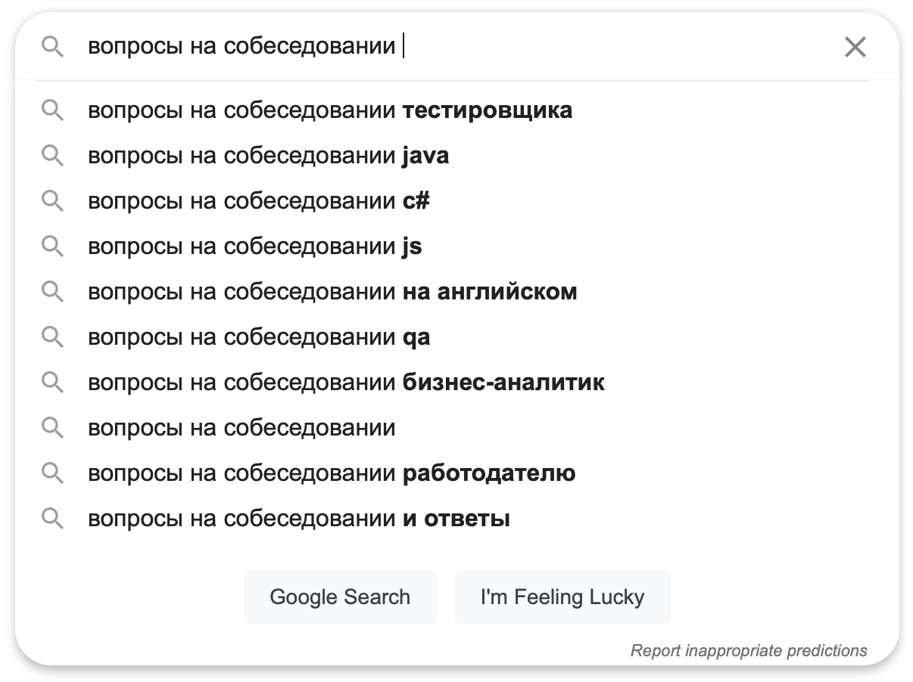
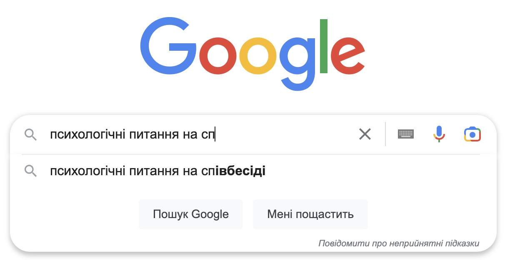

Собеседование
Заметки интервьюера
О себе
- в 2005-м пришёл в web-разработку
- с 2006-го провожу собеседования в NIX
- сформировал два отдела – PHP и Ruby
- был у истоков JS и CMS отделов
CV
- одна страница — хорошо
- две страницы — лучше
- три — многовато будет
CV
- PDF файл на английском (проверьте с помощью grammarly)
- с профессиональной фотографией без фона¹
- кратко и по делу, рекомендуемую структуру опишу чуть позже
- оформление в деловом стиле (emoji в меру)
- обязательно распечатайте на Ч/Б принтере и посмотрите как выглядит
¹ нет, не та кривая с паспорта
CV
- PDF файл на английском (проверьте с помощью Grammarly)
- с профессиональной фотографией без фона¹
- кратко и по делу, рекомендуемую структуру опишу чуть позже
- оформление в деловом стиле (emoji в меру)
- обязательно распечатайте на Ч/Б принтере и посмотрите как выглядит
¹ нет, не та кривая с паспорта
Добавить
- актуальные каналы связи¹
- аккаунт GitHub, Stack Overflow, LinkedIn²
- сертификаты
- уровень владения иностранными языками
¹ и давайте без этих pink.unicorn.2002 и ICQ
² «причешите» ваши профили, или лучше не добавляйте их
Удалить
- ссылки на непрофессиональные соц.сети¹
- нерелевантный опыт работы²
¹ оставьте ссылку на «одноклассники», чтобы не тратить на вас время
² опыт в McDonald's это OK, если вы проходите первое собеседования в IT
Рекомендуемая структура
- ФИО + фото
- кратко о себе, сколько лет в IT, чем занимались, в чём сильны
- опишите свой скилсет, по каждому будьте готовы к вопросам
- опыт работы: период, компания, должность
- проекты: название, описание, технологии, команда, ваша роль
- образование и сертификаты
- знание языков
Напишите эссе по CV 🇺🇦 🇬🇧
- небольшая вводная о себе
- основной профиль работы
- какие технологии знаете
- проекты с какими работали
- какая была команда, ваша роль и зона ответственности
- какие были челенжи, и даже фейлы
Повторите основы

как показывает практика, интервьюеры их тоже гуглят 😅
«Глупые» вопросы¹

¹ глупо отвечать на «глупые» вопросы глупо
Внешний вид
- опрятность
- уместность
- комфорт
Картинка
- источник света
- камера
- микрофон
- фон
отнеситесь как к подготовке стрима, Google подскажет много рецептов 😀
Вот и настал тот день
- не опаздывать
- настроиться на позитив
- проверить микрофон и камеру
- приготовить рабочее место
- подготовить интернет-канал (выключить торренты, обновления и т.д.)
- быть готовым, что попросят зашарить экран
Да будет тишина
- отключить звук на телефоне
- сообщить домашним
- попросить соседей отложить ремонт
- выгулять собаку заранее
Будьте здоровы
- не болеть, не кашлять, не чихать
- заболели — перенесите
Диета
- алкоголь
- молочко
- свежие яблоки
Водичка
- не холодная
- не сладкая
- не газированная
- без алкоголя
мой выбор — остывший кофе ☕️
Напряги
- смотреть в камеру¹
- смотреть на собеседника
- не печатать на клавиатуре
- не втыкать в телефон
¹ переместите камеру по возможности️ так, чтобы смотреть в неё всё время, а не в сторону второго монитора
А теперь вопросы
- почему выбрали именно этот ЯП?
- опишите плюсы и минусы вашего любимого ЯП
- что нового в новой версии?
- с какими фреймворками работали?
- какой выбрали? почему? продайте его!
- etc...
Ещё вопросы
- HTTP?
- REST?
- SOLID?
- ACID
- etc...
Фронтендер?
#my dd.mm.yy, li li a:hover+span{
color: #f00;
}
Задавайте вопросы
- про проект
- технологии
- команда
- процесс
- про компанию
- направления
- перспективы
- соцпакет
погуглите информацию про компанию прежде чем идти к ним на собеседование